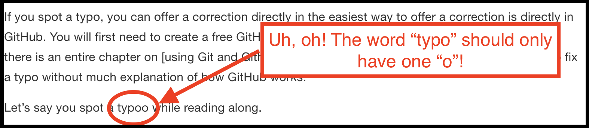
Contributing
Over the years, we have learned so much from our students and colleagues, and we anticipate that there is much more we can learn from you – our readers. Therefore, we welcome and appreciate all constructive contributions to R4Epi!
Typos
The easiest way for you to contribute is to help us clean up the little typos and grammatical errors that inevitably sneak into the text.
If you spot a typo, you can offer a correction directly in GitHub. You will first need to create a free GitHub account: sign-up at github.com. Later in the book, we will cover using GitHub in greater depth (See Chapter 2). Here, we’re just going to walk you through how to fix a typo without much explanation of how GitHub works.
Let’s say you spot a typo while reading along.
Next, click the edit button in the toolbar as shown in the screenshot below.
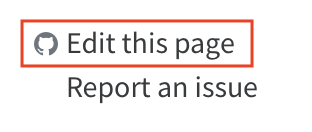
The first time you click the icon, you will be taken to the R4Epi repository on GitHub and asked to fork it. For our purposes, you can think of a GitHub repository as being similar to a shared folder on Dropbox or Google Drive.
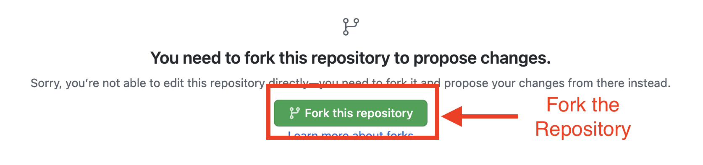
“Forking the repository” basically just means “make a copy of the repository” on your GitHub account. In other words, copy all of the files that make up the R4Epi textbook to your GitHub account. Then, you can fix the typos you found in your copy of the files that make up the book instead of directly editing the actual files that make up the book. This is a safeguard to prevent people from accidentally making changes that shouldn’t be made.
Note
Forking the R4Epi repository does not cost any money or add any files to your computer.
After you fork the repository, you will see a text editor on your screen.
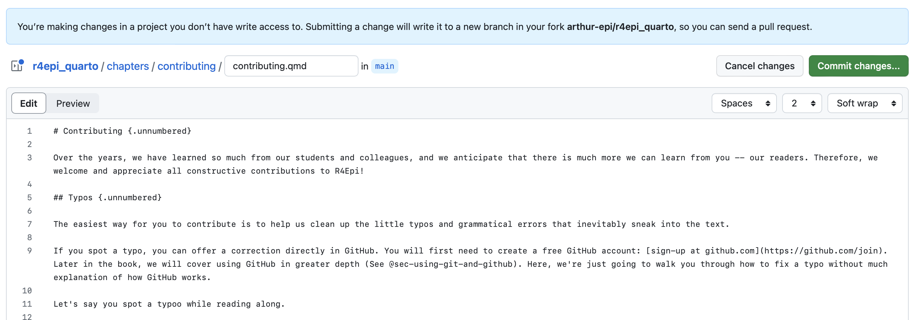
The text editor will display the contents of the file used to make the chapter you were looking at when you clicked the edit button. In this example, it was a file named contributing.qmd. The .qmd file extension means that the file is a Quarto file. We will learn more about Quarto files in Chapter 1, but for now just know that Quarto files can be used to create web pages and other documents that contain a mix of R code, text, and images.
Next, scroll down through the text until you find the typo and fix it. In this case, line 11 contains the word “typoo”. To fix it, you just need to click in the editor window and begin typing. In this case, you would click next to the word “typoo” and delete the second “o”.
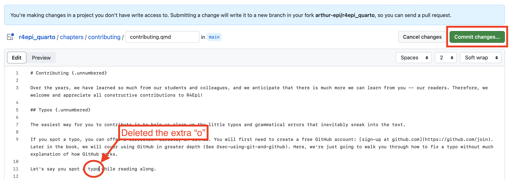
Now, the only thing left to do is propose your typo fix to the authors. To do so, click the green Commit changes... button on the right side of the screen above the text editor (surrounded with a red box in the screenshot above). When you click it, a new Propose changes box will appear on your screen. Type a brief (i.e., 72 characters or less) summary of the change you made in the Commit message box. There is also an Extended description box where you can add a more detailed description of what you did. In the screenshot below, shows an example commit message and extended description that will make it easy for the author to quickly figure out exactly what changes are being proposed.
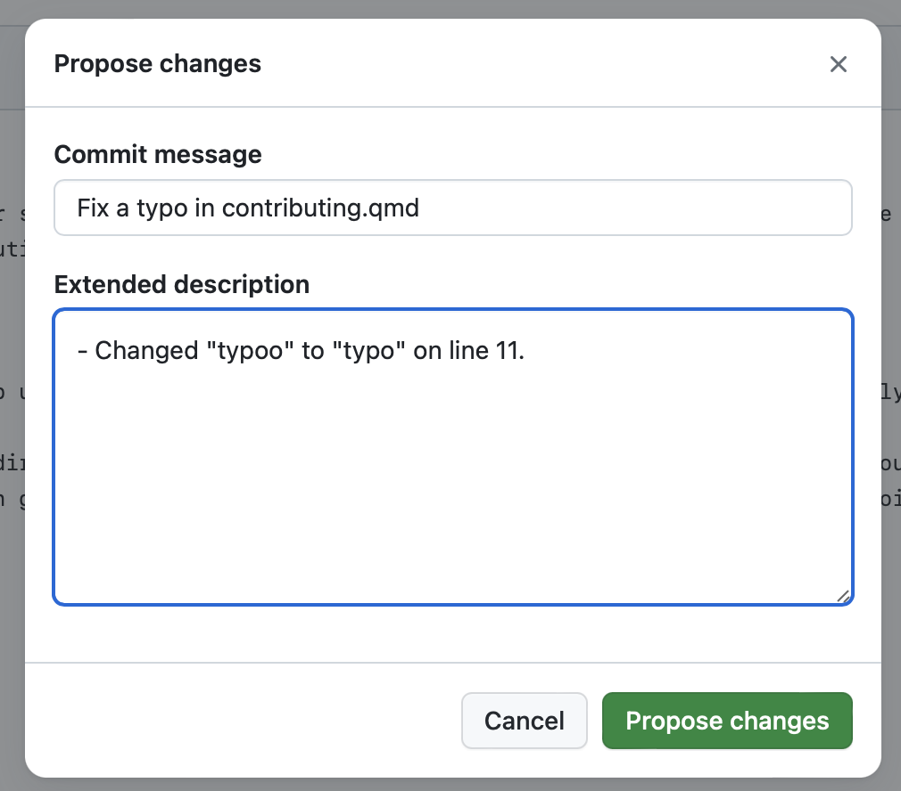
Next, click the Propose changes button. That will take you to another screen where you will be able to create a pull request. This screen is kind of busy, but try not to let it overwhelm you.
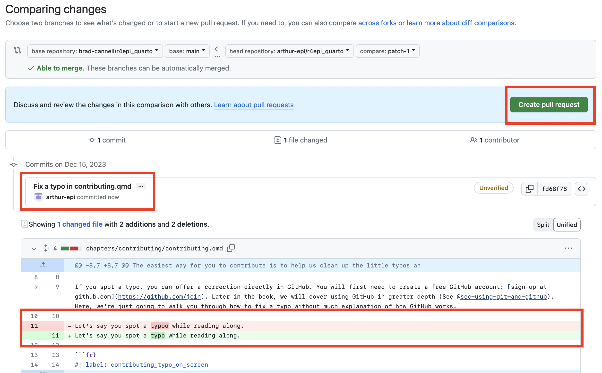
For now, we will focus on the three different sections of the screen that are highlighted with a red outline. We will start at the bottom and work our way up. The red box that is closest to the bottom of the screenshot shows us that the change that made was on line 11. The word “typoo” (highlighted in red) was replaced with the word “typo” (highlighted in green). The red box in the middle of the screenshot shows us the brief description that was written for our proposed change – “Fix a typo in contributing.qmd”. Finally, the red box closest to the top of the screenshot is surrounding the Create pull request button. You will click it to move on with your pull request.
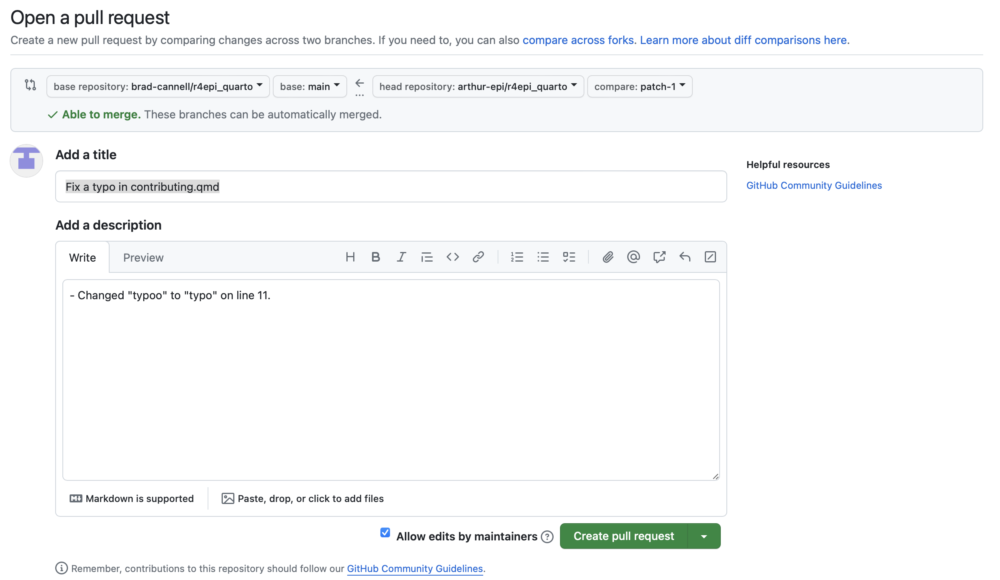
After doing so, you will get one final chance to amend the description of your proposed changes. If you are happy with the commit message and description, then click the Create pull request button one more time. At this point, your job is done! It is now up to the authors to review the changes you’ve proposed and “pull” them into the file in their repository.
In case you are curious, here is what the process looks like on the authors’ end. First, when we open the R4Epi repository page on GitHub, we will see that there is a new pull request.
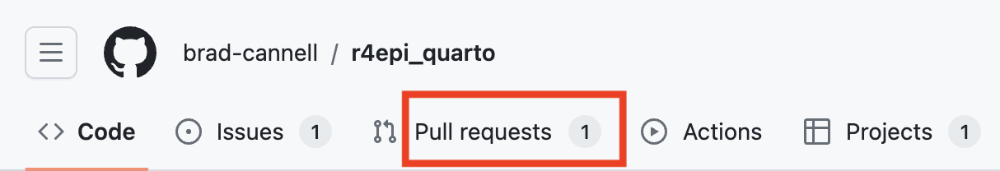
When we open the pull request, we can see the proposed changes to the file.
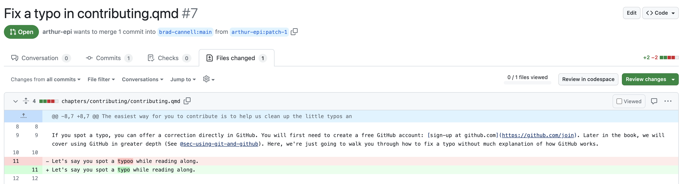
Then, all we have to do is click the Merge pull request button and the fixed file is “pulled in” to replace the file with the typo.
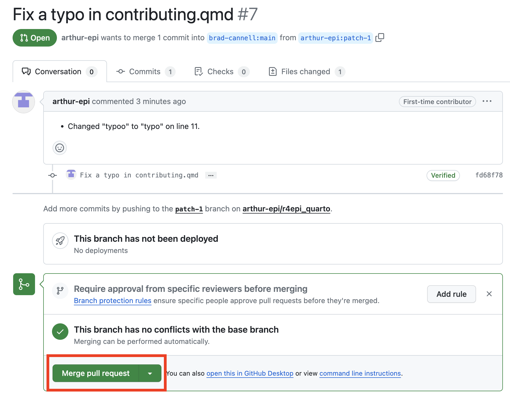